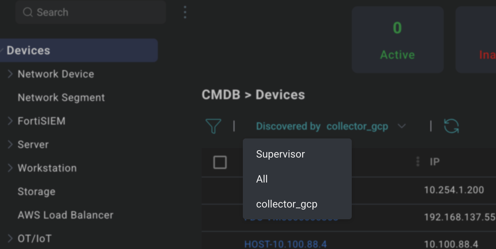
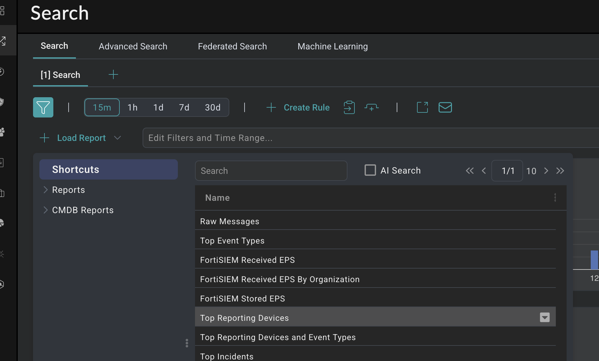
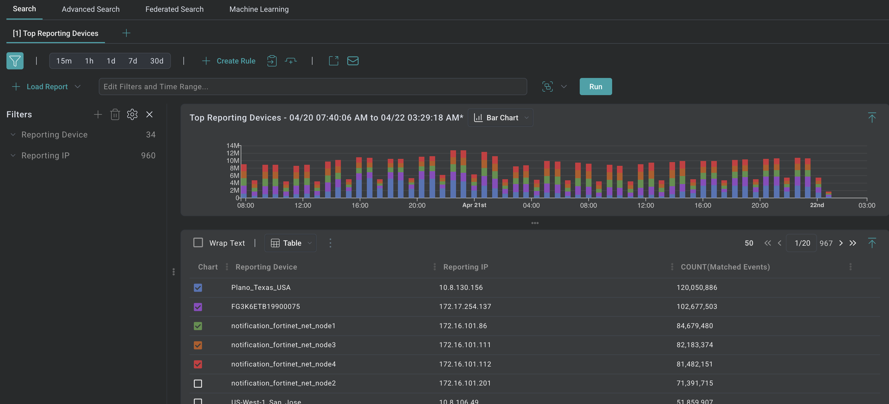
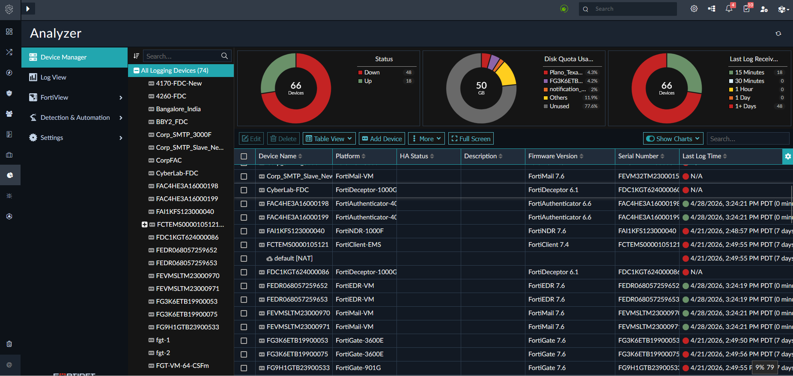
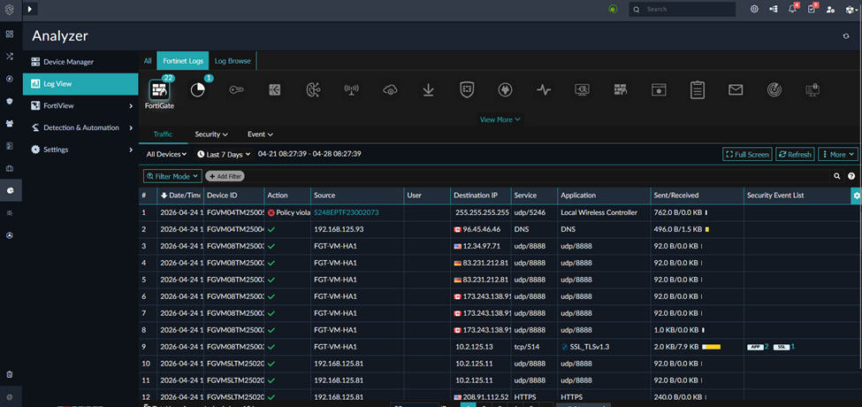
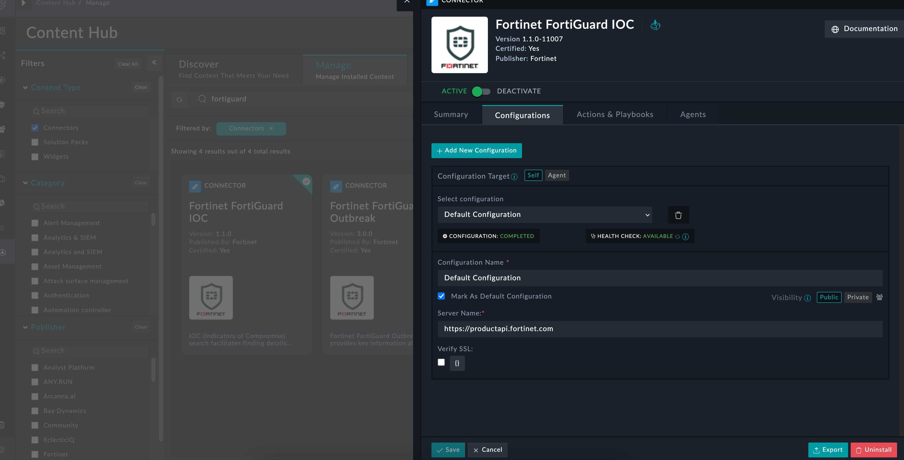
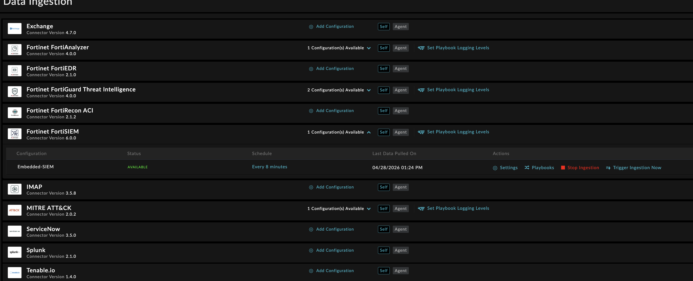
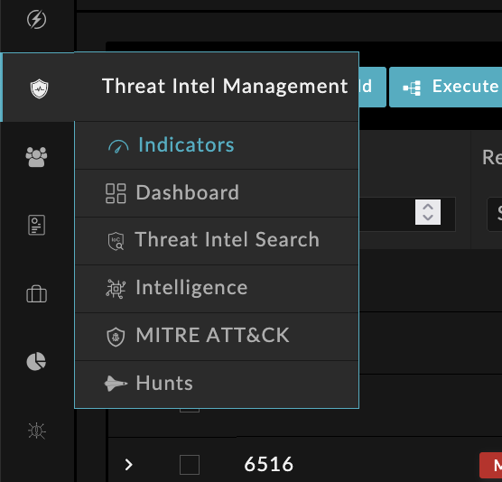
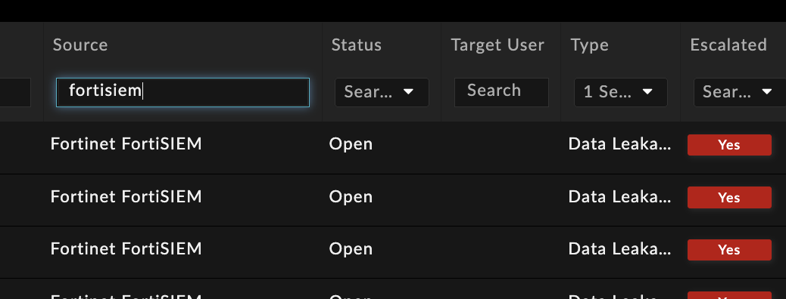

1. Módulo 1 - Confirmar que FortiSOC está sano y recibiendo datos#
1.1. Objetivo - Módulo 1#
Duración: 10–15 min
Tareas:
Confirmar que el SIEM está ingiriendo logs de una fuente de datos activa
Confirmar que Analyzer está recibiendo logs de dispositivos
Validar que el conector de SOAR está sano
Comprender qué ofrece la gestión de inteligencia de amenazas (TIM)
Localizar al menos una alerta
1.2. SIEM#
Hay 3 formas de validar que los eventos fluyen al módulo SIEM: trabájalas una por una.
Nota
También se genera una alerta cuando no se reciben logs de un dispositivo en un intervalo de tiempo personalizable, pero no se cubrirá en esta sección.
Collector – Navega a SIEM / Settings / Health
? ¿Cuál es la salud del Collector y la hora del último archivo recibido?
La marca de tiempo del último archivo recibido debería ser muy reciente: esto indica que los logs se están subiendo activamente a FortiSOC.
Nota
No te preocupes si el Event Status del colector del SIEM no es Normal. Es un entorno de laboratorio, no de producción.
CMDB – Navega a SIEM / CMDB / select the Collector
? Revisa los dispositivos y comprueba si el Event Status es Normal.

SIEM CMDB – vista del collector
Analytics – Navega a Cases & Alerts / Search / Load a report for the Top Reporting Devices
? ¿Los dispositivos top de reporte coinciden con lo que viste en el CMDB?
Deberías ver nombres de dispositivos coherentes y volúmenes de logs relativos.

Analytics – informe de dispositivos top de reporte

Analytics – volúmenes de logs por dispositivo


1.3. Analyzer#
Analyzer almacena y analiza logs específicamente de dispositivos Fortinet Fabric. Valida que esté conectado y recibiendo datos.
Device Status – Navega a Analyzer / Device Manager
? ¿Cuál es el estado del dispositivo y la última vez que se recibieron logs?

Analyzer – Device Manager
View Fabric Logs – Navega a Analyzer / Log View

Analyzer – Log View
Nota
En un despliegue de cliente, usarías esta vista para confirmar que FortiGate u otros dispositivos Fabric se han dado de alta correctamente.


1.4. SOAR#
Los playbooks en SOAR automatizan acciones de respuesta. Para que un playbook funcione, los conectores de los que depende deben estar sanos. El objetivo aquí es validar que los conectores están configurados.
Navega a Automation / Connectors. Busca el FortiGuard IOC Connector y verifica que muestre un estado sano.

SOAR – vista de salud de conectores
El componente SOAR también ingiere alertas de los componentes SIEM y Analyzer.
Navega a Automation / Data Ingestion.
Selecciona el FortiSIEM Connector y revisa los ajustes expandidos.
Peligro
No hagas ningún cambio.

SOAR – ajustes de ingesta del FortiSIEM Connector
? ¿Con qué frecuencia consulta el SIEM el SOAR en busca de nuevas alertas?
Este valor controla con qué rapidez ve un analista una alerta nueva en el SOAR después de generarse en el SIEM.


1.5. Gestión de inteligencia de amenazas#
TIM enriquece las alertas comprobando automáticamente si las IP, dominios y hashes de una alerta son amenazas conocidas. Sin TIM, un analista debe investigar manualmente cada indicador. En este módulo se puede usar el FortiGuard IOC Connector, así como otros conectores de inteligencia de amenazas.
Haz clic en el menú izquierdo de Gestión de inteligencia de amenazas y revisa las opciones disponibles.

Gestión de inteligencia de amenazas overview

Sección |
Descripción |
Indicators |
Extraídos de las alertas. Haz clic en un indicador para ver más detalles y, a continuación, consulta el |
Dashboards |
Pantalla de estado con estadísticas actuales de los indicadores. |
Búsqueda de inteligencia de amenazas |
Busca indicadores. Introduce la dirección IP: 208.91.114.100
? What risk level is assigned to this indicator? Nota Esta es la misma IP que encontrarás en los laboratorios posteriores: tenla en cuenta. |
Feed de inteligencia de amenazas |
Lista completa de todos los indicadores. |
Intelligence |
View the latest FortiGuard threat intel by industry or actor. The Feed Configuration tab (far right) is where additional threat feeds can be integrated. |
MITRE ATT&CK |
Details on groups, tactics, and techniques. This information can be referenced by playbooks to enrich Alerts. |
1.6. Identificación de alertas#
Las alertas en FortiSOC están en la sección Cases & Alerts. Tu tarea es explorar las alertas y encontrar una alerta concreta de interés.
Navega a Cases & Alerts / Alerts / Alert List.
1.6.1. Tarea 1 — Alerta de fuga de datos#
Localiza una alerta con estos filtros:
Type |
Fuga de datos |
Source |
Fortinet FortiSIEM
|
Un buen ejemplo que buscar es:
Office365 mailbox login by partha.kaushik@example.com from Canada using 208.91.114.100


Fuga de datos Alert example
? Desde la alerta, responde a las siguientes preguntas:
¿Dónde puedes ver el evento/log que hizo que se desencadenara la alerta? ¿En qué sección de la GUI está?
¿Dónde puedes ver los indicadores extraídos?
Si no ves ningún indicador, puede deberse al tipo de alerta. Prueba a encontrar una alerta con una dirección IP en el nombre: es más probable que tenga el indicador extraído.
Revisa qué playbooks se ejecutaron para la alerta. Haz clic en la pestaña Playbooks de la alerta. ¿Qué playbooks se ejecutan automáticamente? Si no ves playbooks, consulta los logs históricos de playbooks.